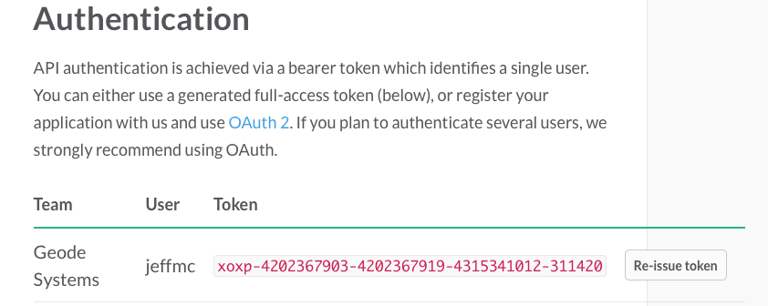
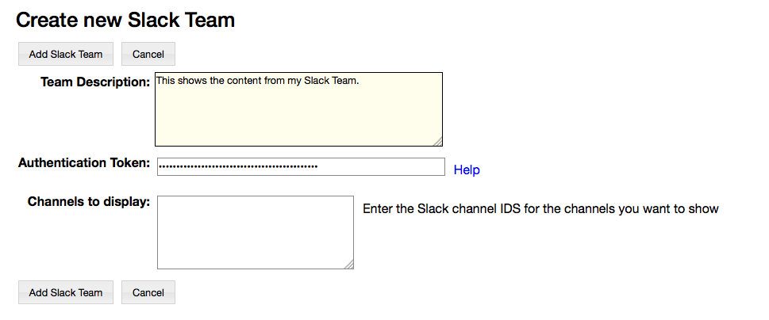

Importing Slack Teams
To set this up you create a RAMADDA Slack Team entry and give it an API token that you get from your Slack Team.
- In Slack go to the Web API page and copy the API token.

- Now, switch over to RAMADDA and go to where you want to have your Slack Team set up. From the File->New Entry menu choose Slack Team.
-
Enter the authentication token you got from Slack and, optionally, any channels you want displayed. If you don't enter any channel ids
then all channels will be shown.

- Save the Slack Team entry. It should now display the selected Slack Channels.
- You can now import this content and display it in various ways using RAMADDA's Wiki facility